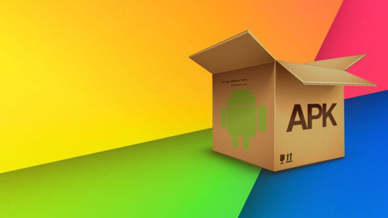

Mobil Test Uygulaması
APK Dosya Uzantısı Nedir?

Android Package Kit sözcüklerinin kısaltılmışı olan APK, Android uygulamalarını dağıtmakta ve yüklemekte kullanılan bir format. APK dosyası, cihazınızda yüklemeye yapmak için gerekli tüm öğeleri barındırır. Windows'taki EXE dosyaları gibi herhangi bir APK dosyasını Android'li cihazınıza kopyalayıp, onu kendiniz yükleyebilirsiniz. Uygulamaları bu şekilde elle yüklemeye "sideloading" deniyor.Herhangi bir uygulamayı Google Play'den indirip yüklediğinizde, APK dosyası otomatik olarak indirilip yükleniyor. Play Store'dan APK dosyalarını almanız mümkün ancak bunları alternatif uygulama mağazalarından da edinebilirsiniz.APK'ları elle yüklemenin birkaç avantajı var. Bunların ilki, uygulamalara önceden sahip olabilmek. Örneğin Google Takvim gibi önemli bir Google uygulaması güncellendiğinde cihazınıza ulaşması bir hafta veya daha uzun sürebilir. APK dosyasını bulup yükleyerek bu süreyi atlayabilirsiniz.
APK Dosya Uzantısı Ne işe Yarar?
Sideloading, Google Play'de olmayan uygulamaları da yüklemenize izin verir. Ancak APK dosyalarını indirirken çok dikkatli olmalısınız. Masaüstünde olduğu gibi APK dosyalarını rastgele kaynaklardan indirmek iyi bir fikir değildir. Özellikle ücretli bir uygulamayı size ücretsiz olarak sunan site, uygulamaya bir zararlı ilave etmiş olabilir. Özetle APK dosyaları, Android'de uygulamaları dağıtmak ve yüklemek için kullanılıyor. Uzman Android kullanıcıları için büyük bir güç sunsa da, onları nereden indirdiğinize dikkat etmenizde fayda var.
Bize Zaman Ayırdığınız için Teşekkürler...